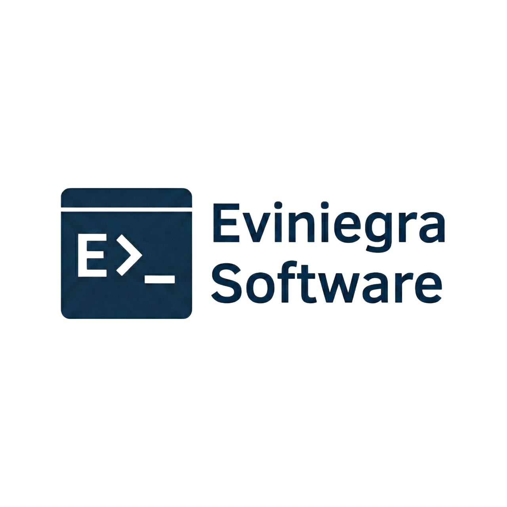
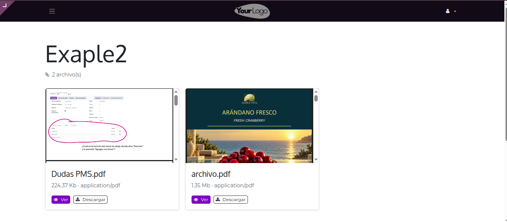
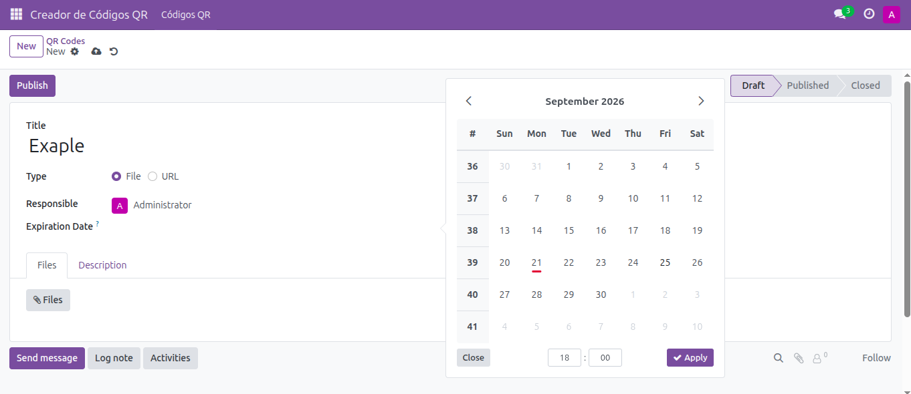
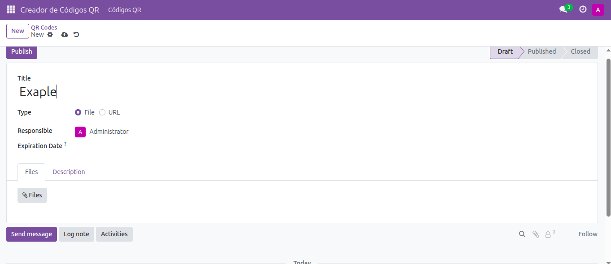
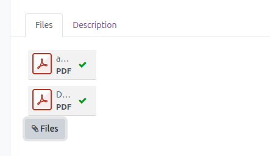
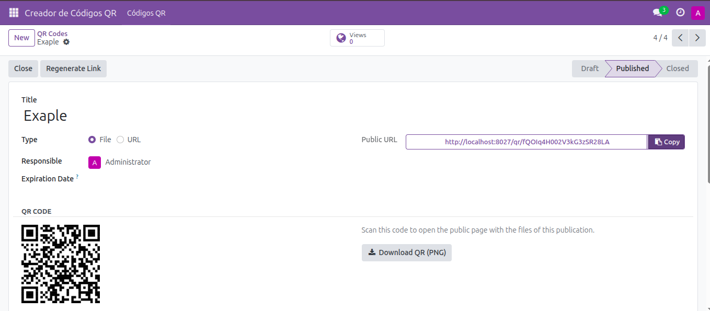

Easily attach files to your QR Code records. If you attach a single file, scanning the QR code will instantly redirect the user to the published file. If you attach multiple files, the link intelligently routes the user to a clean, public directory page where they can browse and select the file they want to view or download.

Public Directory View showing multiple uploaded files
Need a temporary QR code? You can easily set an Expiration Date. Once the date passes, the QR code link will no longer be accessible. If you leave the expiration date empty, the QR code will be permanently active.

The module isn't just for files! You can change the "Type" to URL and use the QR code to simply redirect users to any external web page or Odoo portal page.

The generated public URLs automatically use the same base domain configured in your Odoo instance. If you encounter issues with the link domain, simply review the web.base.url system parameter in Odoo's technical settings.
Create a new QR Code record and add the files you want to share using the attachments tab.

Click "Publish". The module will generate a unique Public URL and a downloadable QR Code image instantly.

Esteban Viniegra Pérez Olagaray
Email: esteban@eviniegra.software
Website: https://eviniegra.software